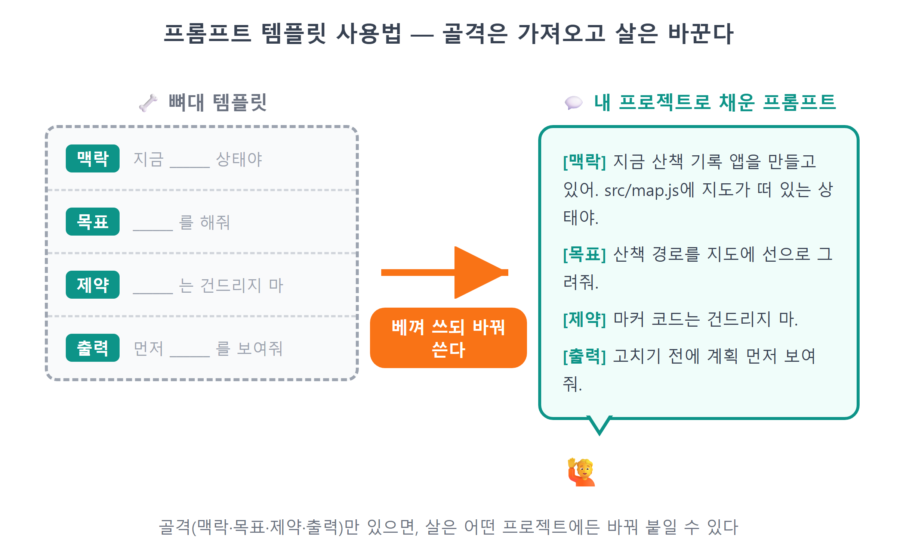
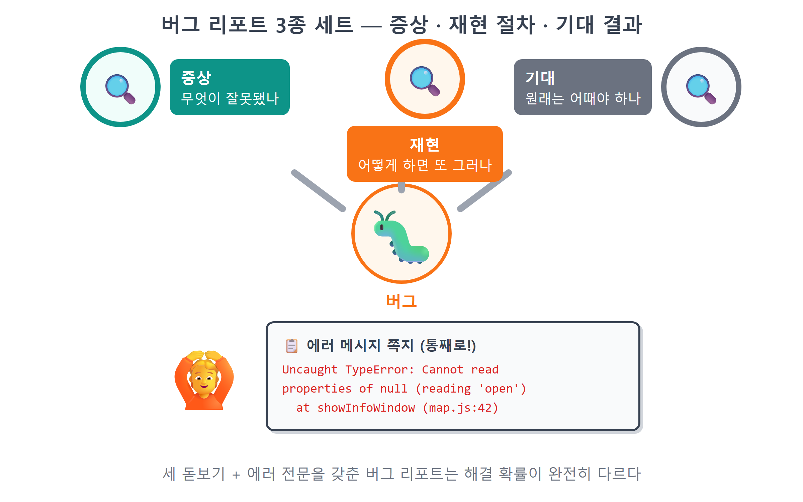

부록 A — 프롬프트 템플릿 모음¶
이 장에서 배우는 것
- 1~26장의 핵심 프롬프트를 여정 순서대로 다시 찾아 쓰는 법
- 버그 잡기·리팩토링·설명 요청·되돌리기·기능 추가·디자인 수정, 여섯 가지 상황별 템플릿
- 좋은 프롬프트 4요소(맥락·목표·제약·출력) 최종 체크리스트
이 부록은 처음부터 끝까지 읽는 장이 아닙니다. 필요할 때 펼쳐서 베껴 쓰는 장입니다. 본문에서 만난 "🗣 이렇게 시키세요" 박스들을 한자리에 모았고, 책이 끝난 뒤 여러분이 자기 프로젝트를 만들다 마주칠 상황들을 위한 빈칸 템플릿을 더했습니다. 프롬프트는 주문이 아니라 대화입니다. 그러니 아래 문장들을 토씨 하나 안 틀리고 외울 필요는 없습니다. 대신 각 프롬프트가 무엇을 어떻게 말하고 있는지 — 어떤 파일을 짚어 주는지, 어떤 함정을 미리 알려 주는지, 어디까지만 하라고 선을 긋는지 — 그 골격을 가져가세요. 골격만 있으면 살은 여러분의 프로젝트에 맞게 얼마든지 바꿔 붙일 수 있습니다.

A.1 장별 핵심 프롬프트 모음 — 26장의 여정을 프롬프트로 다시 걷기¶
각 장에서 가장 중심이 되었던 프롬프트를 여정 순서대로 모았습니다. 프롬프트 앞의 한 줄은 "언제 이 프롬프트를 꺼내 쓰는가"입니다. 나중에 비슷한 일을 다시 하고 싶을 때, 해당 장을 뒤적이는 대신 여기서 바로 찾으세요.
1부 — 바이브코딩 준비운동¶
1장 · AI를 과외 선생님으로 쓰기 — 방금 생긴 코드가 이해되지 않을 때.
방금 만든 코드를 프로그래밍을 처음 배우는 사람에게 설명하듯이, 위에서 아래로 실행 순서를 따라가며 설명해줘. 비유를 하나 들어줘.
2장 · 설치 문제 해결 — Node.js 설치 후 node -v가 안 먹힐 때. (설치 장에서는 만들기보다 고치기를 시킵니다.)
Node.js를 설치했는데 새 터미널에서 node -v가 안 먹혀. 오류 메시지는 이거야: (오류 붙여넣기) PATH 문제인지 확인하고 해결 방법을 단계별로 알려줘.
3장 · 커밋과 되돌리기 맛보기 — git 명령을 외우는 대신 말로 시킬 때.
지금까지 작업한 걸 "지도 마커 기능 추가"라는 메시지로 커밋해줘.
방금 네가 고친 것 때문에 화면이 하얗게 나와. 마지막 커밋 상태로 전부 되돌려줘.
4장 · 첫 심부름과 4요소 연습 — Claude Code와 처음 대화할 때, 그리고 4요소를 몸에 익힐 때.
안녕! 이 폴더에 hello.txt 파일을 만들고, 그 안에 "바이브코딩 시작!"이라고 써줘.
여기는 연습용 폴더야. (맥락) 내가 좋아하는 장소 세 곳의 이름과 한 줄 소개를 담은 places.txt 파일을 만들어줘. (목표) 파일은 하나만 만들고, 내용은 한국어로 써. (제약) 다 만들면 파일 내용을 보여줘. (출력 형식)
5장 · 첫 리포 만들기 — 폴더 하나를 통째로 깃허브에 올릴 때.
hello-github 라는 연습용 저장소를 만들고 싶어. 이 폴더에 나를 소개하는 README.md를 한국어로 짧게 만들고, git 저장소로 초기화해서 첫 커밋을 한 다음, gh로 내 깃허브에 public 리포로 올려 줘.
6장 · 워크트리에서 일 시키기 — Orca 워크트리 터미널에서 에이전트에게 작업 단위를 맡길 때.
이 폴더는 카카오지도 웹앱 프로젝트야. 지도에 마커를 찍는 기능을 만들어 줘. 기존 코드 스타일을 따르고, 다 만들면 바꾼 파일 목록을 정리해 줘.
7장 · 카카오 콘솔 — 이 장은 브라우저에서 손으로 하는 장이라 만들기 프롬프트가 없습니다. 대신 설정이 꼬였을 때 이렇게 물어보세요.
카카오 개발자 콘솔에서 Web 플랫폼에 http://localhost:5173 을 등록했는데도 지도가 403으로 막혀. 콘솔에서 확인해야 할 화면과 순서를 알려줘. 키는 절대 보여주지 않을게.
2부 — 카카오 지도 첫걸음¶
8장 · 프로젝트 스캐폴드 — Vite 프로젝트를 새로 시작할 때.
Vite로 새 프로젝트를 만들어줘. 프로젝트 이름은 my-map, 템플릿은 vanilla(순수 자바스크립트)로. 만든 다음 의존성 설치까지 해줘.
8장 · 키 숨기기 — API 키를 코드 밖으로 빼고 git에서 지킬 때. 키값 자체는 AI에게도 안 불러 준다는 점이 핵심입니다.
프로젝트 루트에 .env 파일을 만들고 VITE_KAKAO_JS_KEY라는 이름으로 카카오 JavaScript 키를 넣을 자리를 만들어줘. 실제 키값은 내가 직접 붙여 넣을게. 그리고 .env가 절대 git에 올라가지 않게 .gitignore도 확인해줘.
9장 · SDK 로더 — 지도 SDK를 동적으로 불러오는 모듈을 만들 때.
카카오지도 JS SDK를 동적으로 불러오는 모듈을 src/loader.js로 만들어줘. 키는 .env의 VITE_KAKAO_JS_KEY에서 읽고, autoload=false로 받아서 kakao.maps.load()가 끝나면 resolve되는 Promise를 반환해줘. 키가 없거나 로드에 실패하면 이유를 알 수 있는 에러로 reject해줘.
9장 · 지도가 안 뜰 때 — 회색 화면·401·403을 만났을 때. 에러 원문을 통째로 붙여넣는 게 요령입니다.
지도가 안 떠. 브라우저 콘솔에 이런 에러가 나와: (콘솔의 빨간 에러 메시지를 그대로 복사해서 붙여넣기) 원인을 찾아서 고쳐줘. 카카오 콘솔 설정 문제라면 뭘 확인해야 하는지 알려줘.
10장 · 지도 컨트롤과 이벤트 — 지도에 기본 컨트롤을 달고, 클릭 좌표를 얻을 때.
지도 오른쪽 위에 일반지도/스카이뷰 전환 버튼을, 오른쪽에 확대·축소 버튼을 달아줘. 카카오 SDK가 기본 제공하는 컨트롤을 사용해.
지도를 클릭하면 클릭한 지점의 위도·경도를 콘솔에 출력해줘. 나중에 이 좌표로 장소를 추가할 거라 좌표를 정확히 얻는 게 목적이야.
3부 — 나만의 장소 지도 만들기¶
11장 · 커스텀 핀 마커 — 이미지 파일 없이 SVG로 카테고리별 핀을 만들 때.
이미지 파일 없이 SVG로 마커 핀을 그리고 싶어. 색과 이모지를 인자로 받아서, 그 색의 핀 안에 흰 원과 이모지가 들어간 MarkerImage를 돌려주는 함수 markerImageFor를 만들어줘. SVG는 data URI로 변환해서 써줘. 핀 끝이 좌표에 정확히 닿게 offset도 맞춰줘.
12장 · 장소 데이터 설계 — 데이터와 화면을 분리하고 스키마를 정할 때.
src/defaultPlaces.js 파일을 만들어줘. 처음 실행할 때 보여줄 예시 장소 5개를 배열로 export 해줘. 각 장소는 id, name, category, lat, lng, rating, memo 속성을 가진 객체야. category는 food/cafe/travel/date 중 하나로 하고, 서울의 유명한 장소들로 채워줘. 좌표는 실제 위치와 맞게.
13장 · 말풍선 오버레이 — InfoWindow 대신 HTML 말풍선을 만들 때.
InfoWindow 대신 CustomOverlay로 말풍선을 바꾸고 싶어. mapView.js에 말풍선 HTML을 만드는 함수를 추가해줘. 말풍선에는 카테고리 이모지 + 장소 이름, 별점(★☆ 5개), 오른쪽 위 × 닫기 버튼을 넣어줘. 스타일은 style.css에 .bubble 클래스로: 흰 배경, 둥근 모서리, 그림자, 아래쪽 가운데에 꼬리 삼각형. 장소 이름은 나중에 사용자가 입력할 수도 있으니 HTML 이스케이프 처리해줘.
14장 · 카테고리 필터 — 필터 상태와 버튼 토글을 만들 때.
src/sidebar.js 모듈을 새로 만들어줘. currentFilter 변수로 현재 선택된 카테고리를 기억하고(초기값 'all'), filteredPlaces() 함수는 전체 장소 배열에서 currentFilter에 해당하는 장소만 골라 돌려줘. 'all'이면 거르지 말고 전부 돌려줘. 그리고 initSidebar() 함수에서 .filter-btn들에 클릭 이벤트를 달아서, 누른 버튼의 data-category를 currentFilter에 넣고, active 클래스를 누른 버튼으로 옮기고, 마지막에 화면을 다시 그리는 콜백을 호출해줘.
15장 · 키워드 검색 — 검색 기능 전체를 요구사항으로 시킬 때. "x가 경도, y가 위도"처럼 아는 함정을 미리 적어 주는 게 포인트입니다.
src/search.js를 새로 만들어줘. initSearch 함수를 export하고, 그 안에서 kakao.maps.services.Places로 키워드 검색을 구현해줘. 🔍 버튼 클릭이나 Enter 키로 검색을 실행하고, Status.OK가 아니면 toast로 "검색 결과가 없습니다."를 띄우고 목록을 숨겨줘. 성공하면 상위 7개만 #search-results에 이름+주소로 렌더링하고, 항목을 클릭하면 지도를 레벨 3으로 확대해서 그 좌표로 panTo 해줘. x가 경도, y가 위도인 것과 문자열이라는 점을 주의해줘. 만든 initSearch는 main.js에서 호출해줘.
16장 · 추가 다이얼로그 — 검색 추가와 클릭 추가가 공유하는 폼을 만들 때.
src/search.js에 openAddDialog 함수를 만들어서 export 해줘. { name, lat, lng }를 받아서 화면 가운데에 장소 추가 다이얼로그를 띄우는 함수야. 이름 입력칸(name이 있으면 미리 채움), 카테고리 select, 메모 textarea, 취소/추가 버튼을 넣어줘. 이 함수는 검색 결과 추가와 지도 클릭 추가 두 곳에서 공용으로 쓸 거야. 다이얼로그는 한 번에 하나만 열리게 하고, 반투명 배경으로 지도를 덮어줘.
17장 · localStorage 저장 — 새로고침해도 데이터가 남게 만들 때. 키 이름·save() 한 곳·try-catch, 설계 원칙 세 개를 우리가 정해서 말해 줍니다.
src/store.js에 localStorage 영속화를 추가해줘. 키 이름은 'my-map-places-v1'로 하고, 시작할 때 저장된 데이터가 있으면 JSON.parse로 불러오고 없거나 깨져 있으면 기본 데이터로 시작해줘. 저장하는 코드는 save() 함수 딱 한 곳에만 두고, add·update·remove처럼 데이터를 바꾸는 모든 메서드 끝에서 save()를 부르게 해줘. localStorage는 사생활 모드 같은 데서 실패할 수 있으니 읽기와 쓰기 모두 try-catch로 감싸고, 실패해도 앱이 죽지 않게 해줘.
18장 · 구독 패턴 — 데이터가 바뀌면 화면이 저절로 다시 그려지게 할 때.
store에 subscribe로 화면 갱신 함수들을 등록해서, 장소 데이터가 바뀌면 지도와 사이드바 목록이 자동으로 다시 그려지게 해줘. 지도 갱신(rerender)은 main.js에서, 목록 갱신(renderList)은 sidebar.js의 initSidebar 안에서 구독해줘.
19장 · 상세 패널 — 별점·메모·삭제까지 한 모듈로 시킬 때. escapeHtml을 챙기는 것도 우리 몫입니다.
src/detail.js를 새로 만들어줘. openDetail(id)과 closeDetail을 export하고, openDetail은 store.get(id)으로 장소를 찾아 #detail-panel 안에 머리글, 별 버튼 5개, 메모 textarea, 저장/삭제 버튼을 그려줘. 별을 누르면 store.update로 rating을 바꾸고, 삭제는 confirm으로 물어본 뒤 store.remove 해줘. 이름과 메모는 escapeHtml로 감싸줘.
4부 — 한 단계 더¶
20장 · 내 위치 — 권한 UX 원칙("버튼을 눌렀을 때만")을 프롬프트에 담을 때.
지도 오른쪽 아래에 🧭 내 위치 버튼을 추가해줘. 누르면 Geolocation API로 현재 위치를 얻어서, 지도를 그 자리로 이동하고 카카오맵처럼 파란 점을 표시해줘. 파란 점은 CustomOverlay + CSS로 만들고, 권한이 거부되면 토스트로 알려줘. 위치 요청은 반드시 버튼을 눌렀을 때만 해야 해.
21장 · URL 공유 — 지도 상태를 해시로 인코딩해서 링크로 만들 때.
src/share.js를 새로 만들어줘. 🔗 공유 버튼을 클릭하면 지도의 현재 중심 좌표와 레벨을 #위도,경도,레벨 해시로 만들어줘. 좌표는 toFixed(5)로 자르고, history.replaceState로 주소창에 반영한 다음, 전체 URL을 navigator.clipboard.writeText로 복사하고 toast로 알려줘. 클립보드 복사가 실패할 수도 있으니 try-catch로 감싸줘.
22장 · 마커 클러스터러 — 장소가 많아져 지도가 어지러울 때.
src/mapView.js에 마커 클러스터러를 적용해줘. createMap에서 kakao.maps.MarkerClusterer를 하나 만들어서 모듈 변수로 들고 있어줘. 옵션은 averageCenter를 켜고, minLevel 6, minClusterSize 3으로. 그리고 renderPlaces에서 마커를 setMap으로 직접 붙이지 말고 클러스터러의 addMarkers로 한꺼번에 맡기고, 다시 그리기 전에는 removeMarkers로 이전 마커들을 빼줘. 말풍선 오버레이 로직은 그대로 둬.
23장 · 모바일 대응 — 작은 화면에서 사이드바를 접을 때.
화면 폭 640px 이하에서 사이드바가 지도 아래쪽에 접힌 상태로 시작하고, 손잡이를 탭하면 펼쳐지게 미디어쿼리와 collapsed 클래스로 만들어줘. 사이드바가 접히고 펼쳐질 때 지도 크기가 달라지니 kakao 지도의 relayout(resize)을 꼭 다시 호출해줘. 데스크톱 레이아웃은 바뀌면 안 돼.
5부 — 세상에 공개하기¶
24장 · 깃허브에 올리기 — 완성된 앱을 리포로 만들 때. .env 점검을 프롬프트 안에서 시키는 게 안전벨트입니다.
이 프로젝트를 git으로 초기화해줘. 먼저 .gitignore에 .env와 node_modules가 들어 있는지 확인하고, 빠져 있으면 추가해줘. 그다음 "나만의 지도 v1"이라는 메시지로 첫 커밋을 하고, gh로 my-map이라는 public 리포를 만들어서 푸시해줘. 푸시 전에 커밋에 .env가 포함되지 않았는지 한 번 더 확인해줘.
25장 · Pages 배포 — 빌드와 자동 배포를 설정할 때.
이 Vite 프로젝트를 GitHub Pages로 배포하고 싶어. vite.config.js에 base를 '/my-map/'으로 설정하고, GitHub 공식 Pages 배포 Actions 워크플로를 추가해서 main에 푸시할 때마다 자동 배포되게 해줘. 다 되면 내가 카카오 콘솔에 등록해야 할 배포 도메인 주소를 알려줘.
26장 · README 쓰기 — 프로젝트의 얼굴을 만들 때.
README.md를 만들어줘. 맨 위에 앱 스크린샷 자리, 그 아래 한 줄 소개, 주요 기능 목록(지도·마커·검색·필터·저장·공유), 사용 기술, 로컬 실행 방법(.env 설정 포함), 배포 링크 순서로 구성해줘. 전부 한국어로, 자랑스럽지만 담백하게.
💡 팁
프롬프트를 다시 쓸 때는 장 번호보다 파일 이름으로 찾는 게 빠릅니다. loader.js가 궁금하면 9장, store.js는 17장, search.js는 15~16장, share.js는 21장. 파일 하나에 장 하나 — 이 책의 구조 자체가 색인입니다.
A.2 상황별 템플릿 — 여섯 가지 자주 오는 순간¶
책의 여정이 끝나면 프롬프트는 더 이상 장 순서대로 오지 않습니다. 버그가 터지고, 코드가 지저분해지고, 남이 짠 코드를 읽어야 하고, 어제의 내가 원망스러운 순간이 무작위로 옵니다. 그 순간마다 꺼내 쓸 여섯 가지 템플릿입니다. 괄호 속 밑줄 부분만 여러분의 상황으로 바꿔 넣으세요.
① 버그 잡기 — 증상·재현·기대, 세 가지를 갖춰서¶
"안 돼요"는 프롬프트가 아닙니다. AI가 버그를 잡으려면 사람 개발자와 똑같이 세 가지가 필요합니다. 무엇이 잘못됐는지(증상), 어떻게 하면 그 잘못이 다시 일어나는지(재현 절차), 원래는 어떻게 됐어야 하는지(기대 결과). 여기에 에러 메시지 원문을 통째로 붙이면 완성입니다. 9장에서 배운 디버깅 제1원칙 — 에러 메시지를 요약하지 말고 통째로 — 을 기억하세요.
🗣 이렇게 시키세요
(증상) 마커를 클릭해도 말풍선이 안 열려. (재현) 앱을 새로고침하고 → 필터에서 카페를 누른 다음 → 아무 카페 마커나 클릭하면 매번 그래. (기대) 클릭한 마커 위에 말풍선이 하나 열려야 해. (증거) 콘솔에는 이 에러가 나와: Uncaught TypeError: Cannot read properties of null (에러 전문 붙여넣기) 원인을 찾아서 고쳐줘. 고치기 전에 어디가 문제였는지 한 줄로 먼저 말해줘.
마지막 줄 "고치기 전에 원인을 먼저 말해줘"는 작은 습관이지만 큰 차이를 만듭니다. AI의 진단이 엉뚱하면 수정도 엉뚱할 확률이 높은데, 진단을 먼저 들으면 코드가 바뀌기 전에 방향을 바로잡을 수 있습니다.

② 리팩토링 — 동작은 그대로, 구조만 바꾸기¶
리팩토링은 "겉보기 동작은 하나도 안 바꾸면서 속 구조만 고치는 일"입니다. 이 정의를 프롬프트에 그대로 넣는 것이 요령입니다. 그리고 리팩토링 전에는 반드시 먼저 커밋하세요. 동작이 바뀌었는지 확인할 기준점이 있어야 하고, 잘못되면 돌아갈 곳이 있어야 합니다.
🗣 이렇게 시키세요
리팩토링 전에 지금 상태를 "리팩토링 전"으로 커밋해줘. 그다음 (main.js) 파일이 너무 길어졌어. (지도 초기화 / 이벤트 연결 / 화면 갱신) 부분이 뒤섞여 있으니 역할별로 함수를 나눠서 정리해줘. 단, 겉보기 동작은 절대 바뀌면 안 돼. 새 파일은 만들지 말고 이 파일 안에서만 정리해줘. 다 되면 무엇을 어떻게 옮겼는지 목록으로 보여줘.
"동작은 바뀌면 안 돼"라는 제약이 없으면, AI는 정리하는 김에 개선까지 해 버리는 경향이 있습니다. 개선은 고맙지만 리팩토링과 섞이면 "어디서 동작이 달라졌는지"를 추적할 수 없게 됩니다. 한 번에 한 종류의 변화 — 이것도 작게 시키기의 연장입니다.
③ 설명 요청 — 이해될 때까지, 부끄러움 없이¶
설명 요청은 파일을 바꾸지 않으니 권한 프롬프트도 뜨지 않고, 아무리 시켜도 부작용이 없습니다. 이 책에서 가장 자주, 가장 마음 편히 쓸 템플릿입니다. 요령은 수준과 형식을 지정하는 것입니다. "설명해줘"보다 "처음 배우는 사람에게, 한 줄씩"이 훨씬 좋은 설명을 데려옵니다.
🗣 이렇게 시키세요
(src/store.js)의 (subscribe 함수)를 한 줄씩 설명해줘. 프로그래밍을 처음 배우는 사람 기준으로, 각 줄이 "왜" 필요한지도 같이 말해줘.
이 코드에서 (async/await)가 뭘 하는 건지 비유를 들어 설명해줘. 그리고 이게 없으면 무슨 일이 생기는지도.
방금 네가 고친 부분에서, 고치기 전과 후가 어떻게 다른지 비교해서 설명해줘.
같은 코드를 두 번 세 번 물어봐도 됩니다. AI는 지치지 않는 과외 선생님이고, "코드를 이해하려 노력하되 외우지 않는다"는 이 책의 철학은 언제든 물어볼 수 있다는 전제 위에 서 있습니다.
④ 되돌리기 — git이라는 안전벨트 당기기¶
3장에서 git을 "바이브코딩의 안전벨트"라고 불렀습니다. 안전벨트는 평소에 채워 두어야(자주 커밋) 사고 순간에 작동합니다(되돌리기). 되돌리기 프롬프트는 상황별로 세 단계가 있습니다.
🗣 이렇게 시키세요
평소에 — 기능 하나가 끝날 때마다:
지금까지 작업한 걸 "(검색 기능 완성)"이라는 메시지로 커밋해줘.
방금 한 수정만 무르고 싶을 때:
방금 네가 고친 것 때문에 (화면이 하얗게 나와). 마지막 커밋 상태로 전부 되돌려줘.
특정 파일만, 혹은 며칠 전으로 돌아가고 싶을 때:
(style.css)만 마지막 커밋 상태로 되돌려줘. 다른 파일은 그대로 둬.
커밋 목록을 최근 10개 보여줘. 그중 "(말풍선 완성)" 커밋 시점으로 코드 전체를 되돌리고 싶은데, 지금 상태도 잃고 싶지 않아. 안전한 방법으로 해줘.
마지막 프롬프트의 "지금 상태도 잃고 싶지 않아"가 중요합니다. 되돌리기 명령 중에는 현재 작업을 영영 날리는 것도 있는데, 이렇게 조건을 걸어 두면 AI가 브랜치를 만들거나 임시 커밋을 하는 등 안전한 경로를 택합니다. 무엇을 원하는지만 말하고 방법은 맡기되, 잃으면 안 되는 것을 명시하세요.
⚠️ 주의
"전부 되돌려줘"는 강력한 만큼 커밋하지 않은 작업을 함께 지웁니다. 되돌리기 전에 "지금 커밋 안 된 변경이 뭐가 있는지 먼저 보여줘"라고 한 번 확인하는 습관을 들이면 후회할 일이 없습니다.
⑤ 기능 추가 — 새 기능은 4요소 정장을 입혀서¶
책이 끝난 뒤 여러분이 가장 많이 쓸 템플릿입니다. 새 기능일수록 AI가 추측할 여지가 많으므로, 4요소를 가장 격식 있게 갖춰 입혀야 합니다. 특히 기존 코드와의 연결 고리(어느 파일, 어느 함수 옆인지)와 하지 말 것(새 라이브러리 금지, 다른 파일 건드리지 않기)을 챙기세요.
🗣 이렇게 시키세요
카카오지도 JS SDK를 쓰는 Vite 바닐라 JS 프로젝트야. 장소 데이터는 store.js가 관리하고 지도는 mapView.js가 그려. (맥락) 장소마다 "방문함" 체크 표시를 붙이고 싶어. 상세 패널에 체크박스를 넣고, 방문한 장소의 마커는 반투명하게 표시해줘. (목표) 장소 스키마에는 visited 속성 하나만 추가하고, 새 라이브러리는 설치하지 마. 기존 데이터를 불러올 때 visited가 없으면 false로 취급해줘. (제약) 바뀐 파일 목록과 함께, 바뀐 부분만 보여주고 한 줄씩 설명해줘. (출력 형식)
제약 중 "기존 데이터에 visited가 없으면 false로"를 눈여겨보세요. 스키마를 바꾸면 이미 저장된 옛 데이터와의 호환이 항상 문제가 됩니다. 이런 모서리를 프롬프트에서 미리 짚어 주는 사람이, 15장의 "x가 경도, y가 위도"를 짚어 주던 바로 그 기획자입니다.
⑥ 디자인 수정 — 형용사 대신 측정할 수 있는 말로¶
"예쁘게 해줘"는 AI에게 가장 어려운 주문입니다. 예쁨의 기준이 여러분 머릿속에만 있기 때문입니다. 디자인 프롬프트의 요령은 두 가지입니다. 첫째, 형용사를 값과 비교 대상으로 번역하기 — "더 크게"가 아니라 "글자를 16px로", "세련되게"가 아니라 "말풍선과 같은 톤으로(흰 배경, 둥근 모서리, 그림자)". 둘째, 한 번에 한 요소씩 고치기 — 전체 리디자인을 한 방에 시키면 마음에 안 드는 부분을 되돌리기 어렵습니다.
🗣 이렇게 시키세요
사이드바 목록 항목이 답답해 보여. 항목 위아래 여백을 지금의 1.5배로 늘리고, 장소 이름은 15px 굵게, 카테고리·별점 줄은 12px 회색으로 바꿔줘. style.css의 목록 부분만 수정해.
필터 버튼의 선택 상태가 눈에 잘 안 띄어. 선택된 버튼은 해당 카테고리 색을 배경으로 채우고 글자를 흰색으로 해줘. categories.js에 정의된 색을 그대로 써서 다른 곳과 톤을 맞춰줘.
상세 패널 디자인을 말풍선(.bubble)과 같은 스타일 언어로 맞춰줘: 같은 둥근 모서리 값, 같은 그림자, 같은 글꼴 크기 체계.
세 번째 프롬프트처럼 "이미 잘 만들어진 요소를 기준으로 삼기"는 특히 강력합니다. 여러분의 앱 안에 이미 마음에 드는 부분이 있다면, 그것이 곧 디자인 시스템입니다.
A.3 좋은 프롬프트 4요소 — 최종 체크리스트¶
4장에서 배운 공식을 마지막으로 한 번 더 폅니다. 프롬프트를 보내기 전 3초, 이 네 칸을 눈으로 훑으세요.
| 요소 | 스스로 묻는 질문 | 빠졌을 때의 증상 |
|---|---|---|
| 맥락 | AI가 이 프로젝트/파일에 대해 알아야 할 배경을 줬나? 기준이 되는 파일을 짚어 줬나? | 엉뚱한 파일을 만들거나, 프로젝트 스타일과 동떨어진 코드가 온다 |
| 목표 | 무엇이 "완성"인지 한 문장으로 말했나? 목표가 한 걸음 크기인가? | 결과물이 내 상상과 다르거나, 너무 커서 확인·되돌리기가 어렵다 |
| 제약 | 하지 말 것(다른 파일 금지, 라이브러리 금지)과 지킬 것(스키마, 함정)을 말했나? | 부탁 안 한 곳까지 고쳐 놓거나, 아는 함정에 그대로 빠진다 |
| 출력 형식 | 결과를 어떻게 보여 달라고 했나(바뀐 부분만, 목록으로, 설명과 함께)? | 무엇이 바뀌었는지 파악하는 데 시간이 더 든다 |
그리고 4요소 바깥에, 이 책이 여정 내내 반복한 세 가지 습관을 겹쳐 놓으면 체크리스트가 완성됩니다.
- 작게 시켰나? — 지도 띄우기, 그다음 마커, 그다음 말풍선. 한 프롬프트 한 걸음.
- 확인할 방법이 있나? — 실행해 보기, 콘솔 열어 보기, 바뀐 부분 설명 듣기.
- 돌아갈 곳이 있나? — 큰 수정 전에는 커밋. 안전벨트는 채워 둘 때만 작동합니다.
매번 네 요소를 논문 쓰듯 갖출 필요는 없습니다. "오타 고쳐줘"는 한 줄이면 충분합니다. 하지만 결과가 마음에 안 들 때 프롬프트를 다시 보면, 십중팔구 네 칸 중 하나가 비어 있습니다. 그때 이 표로 돌아오세요.
A.4 마무리¶
📌 핵심 요약
- 장별 프롬프트는 외우는 게 아니라 골격을 가져다 쓰는 것 — 파일 이름으로 찾으면 빠릅니다.
- 버그 리포트는 증상·재현·기대 3종 세트에 에러 원문을 통째로 붙입니다.
- 리팩토링은 "동작은 그대로"를 명시하고 시작 전에 커밋, 되돌리기는 "잃으면 안 되는 것"을 명시합니다.
- 디자인 수정은 형용사 대신 값과 비교 대상으로, 한 번에 한 요소씩.
- 프롬프트 점검은 맥락·목표·제약·출력 4요소 + 작게·확인·되돌리기 3습관.
🤔 생각해보기
Q1. 최근에 결과가 마음에 안 들었던 프롬프트를 하나 떠올려 보세요. 4요소 중 무엇이 빠져 있었나요?
✍️ ________
✍️ ________
✏️ 연습 문제
- "지도가 이상해"라는 문장을 A.2의 버그 잡기 템플릿에 맞춰 증상·재현·기대 3종 세트로 다시 써 보세요.
- 여러분의 지도에 넣고 싶은 새 기능 하나를 골라, ⑤ 기능 추가 템플릿의 4요소를 모두 채운 프롬프트를 작성해 보세요.
- A.1에서 프롬프트 하나를 골라 맥락·목표·제약·출력이 각각 어느 부분인지 밑줄로 분해해 보세요.
🔎 더 찾아보기
프롬프트 엔지니어링— 좋은 지시문을 설계하는 기법을 다루는 분야. 이 부록의 4요소는 그 입문판입니다.CLAUDE.md— 프로젝트 폴더에 두면 Claude Code가 매번 읽는 프로젝트 규칙 파일. 자주 반복하는 맥락·제약을 여기 적어 두면 프롬프트가 짧아집니다.git revert— 되돌린 기록까지 남기는 안전한 되돌리기. "지금 상태도 잃고 싶지 않아"의 정석 답안 중 하나.
다음 장 예고 — 부록 B에서는 이 책의 여정에서 만날 수 있는 말썽들을 증상→원인→해결 표로 정리하고, git·gh·npm 명령과 카카오 SDK 객체 치트시트를 한 장에 모읍니다. 지도가 회색이거나 401이 뜨는 순간, 부록 B를 펴세요.